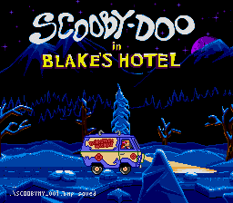
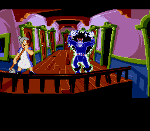

| Scooby-Doo Mystery | | Acclaim/Illusions |
|
| |
 You know, I have a problem with Sundays. I really, really hate them. It didn't used to be this way - I used to look forward to Sundays. Of course, that was when 24 was on. What a fine show that is. Unfortunately, it's now over, which leaves Sunday's televisual benefits limited to an afternoon showing of Stargate SG-1, and that only when Channel 4 don't have something better to show, like horse racing or cricket or championship tiddly-winks or something. There's very little entertainment to be had on Sundays. Most of my Sunday afternoons are spent sitting in a park overlooking the town centre, eating cookies, writing amusing things for YS3, and generally watching everybody else enjoying their Sunday. It's not much fun, but it beats the Eastenders omnibus. (I like the programme, but two hours of it at once is just too depressing.) Would it really kill somebody to screen a decent TV show on Sundays?  For twenty-four hours every week, there's an entertainment drought. I've taken to not getting up until mid-day at the earliest, to get the most entertainment out of any dreams my subconscious can provide. Even then, I have to suffer such strange things as a film starring Joe Pesci and Danny Glover in which the two men try to go fishing, but end up getting mixed up with a bunch of crims and blow up a hotel. I don't know how long it's been on, I don't know what it's called. It was on when I woke up, and it's still no more bizarre than any of the other films BBC have shown in the months since their best two Sunday programmes finished. And it's going to be like this until 24 and The X Files return. It's a strange enough phenomenon for Mulder and Scully, that's for sure. |
|
|